We were learning about our own visual identities, the principles of branding and how we could design are own personalities and characters graphically. The brief we were given was to design our own brand identity including, monogram, visual mark, and word mark ensuring that we reflect our own personalities and style into the final project.
Like every project I started of my brand by getting the ideas in my head on to paper. This helped me visualise better my ideas and help contribute to the final outcome. There was time constraint on my process as it took me a while to get a clear image in my head of what i wanted everything to look like. There was a lot of indecisiveness.
In the end I decided to keep my monogram looking abstract as I felt it suited my style best. I also kept to black and white as I think it looks professional.

For my visual mark I wanted it to represent my design process and how the oragami bird can be folded so many different ways which I feel is similar to when im given a project. There is so many different ideas, approaches and method to go through before you end up with the final design.